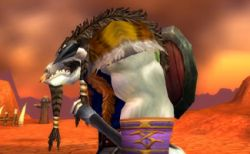

Coeurdevent
Sexe : Homme
Race : Tauren
Faction : Horde
Formation : Chaman
Description : Coeur de Vent était de ces enfants que l'on retrouve un beau matin devant sa hutte, seul dans un panier d'osier, laissé à l'abandon.
Surement un prématuré, un petit né trop tôt. Un enfant désiré de personne.
Le clan tout entier l'avait recceuilli. Son nom avait était choisi par les anciens. Il avait le pelage pâle, presque blanc. Comme les nuages. Il était si léger... Il s'appelerait Coeur de Vent.
Choyé par les femelles, nourri au pis par chacune d'entre elles, rudoyé par les mâles qui ne voyait en lui qu' une erreur de la nature, Coeur de Vent grandit au sein de ce clan d'adoption.
Prédestiné vers la chasse par les sages qui ne voyaient pas un lui un combattant de talent, il commenca son apprentissage de la vie.
La nuit, comme tout un chacun, Coeur de Vent rêvait. Il s'évadait de cette condition qu'il ne jugeait pas sienne, de ces choix qu'il n'avait pas fait, de ces combats dont l'issue le rendait honteux. Ses rêves, eux, étaient toujours beaux, paisibles. Il était respecté et important chaque nuit. Cela devint pour lui essentiel. Rêver pour vivre mieux. Ses nuits lui faisaient oublier ses jours, et Coeur de Vent s'éloignait souvent des huttes, à l'abri de tout regard pour s'égarer sous l'ombre d'un arbre et s'y assoupir.
Mais tout changea, à partir de cette nuit, trois centaines de jours auparavent.
Ce rêve l'avait comme meurtri, il en a presque ressenti la douleur. Tout était devenu sombre d'un coup. Plus rien, plus aucune image du clan, de ces prairies, de ces animaux.
Une odeur forte de souffre, mêlée à ce que son odorat pouvait percevoir comme de la peur, une âcre transpiration pleine d'adrénaline. Et un éclair vint jaillir là, sous ses paupières. Le sang coulait de ses yeux, lentement, jusqu'a former une marre. Puis un autre éclair et Coeur de Vent distinguait des roches.
Tout s'embrasa. Il pouvait sentir la chaleur de ce volcan de lave sous la corne de ses pattes. Plus loin, il distinguait des corps, encore debouts...calcinés. Des corps par centaines. Un millier peut-être, tous transformés en braises ardentes, le visage affligé d'une expression de terreur et de douleur intense. Et là, au milieu de cette marée de souffrance, une Tauren, vivante, à genou devant ce qu'il distinguait comme un animal mort. Elle lui parlait, carressant son cou. Elle lui disait son amour, la peine qu'elle avait à le quitter. Elle lui parlait une dernière fois.
Leur peau brûlait petit à petit, leur pelage avait déjà presque entièrement disparu. Coeur de Vent aurait voulu les aider, les extirper de cette lave, les sauver de cette mort inommable. Mais que pouvait faire un jeune chasseur, si frêle, si inexperimenté. Il ne pu qu' apercevoir les larmes jaillir des yeux de celle qui était suppliante, là, devant lui. Et il ne pu rien faire quand elle ramassa une poignée de poussière et s'embrasa face à lui en criant, le visage en pleurs :" Coeur de Vent, tu aurais pu empecher tout ça ! Tu n'as pas fait les bons choix !".
La sueur qui coulait de son front ,lorsque Coeur de Vent se reveilla, sècha vite, à la chaleur du soleil au zenith. Pas les larmes qu'il pleura plusieurs nuits d'affilées, ne trouvant plus le sommeil, ne rêvant plus. Il partagea son rêve avec un des sages de la tribu. Celui ci lui expliqua que les rêves sont les messages du vent, qu'ils apportaient la vérité à qui savait la recevoir. Il lui raconta comment ne pas s' arrêter aux images, mais plutôt interpreter les symboles qu'on lui offrait, ne retenir que l'essentiel.
Un feu ardent tuerait, beaucoup de victimes seraient à pleurer, et il devait sauver la femelle à la poussière, la femelle qui parle aux animaux.
Coeur de Vent se mit en tête de trouver cette femme, et commença à apprendre le chamanisme, afin d'être capable de controler les éléments. Un jour il éteindrait ce feu. Il ne resterait pas incapable devant la mort.
Une année passa. Ses rêves étaient revenus depuis quelques mois, plus beaux et plus forts qu' avant. De plus en plus souvent, ils lui annoncaient de quoi le lendemain serait fait. Jusqu'au jour ou le vieux sage lui parla d'un village voisin. Un village rempli de jeunes Taurens comme lui et d'une chasseuse qui s'appelait " Poussière ".
Plus d'infos sur Coeurdevent >>>